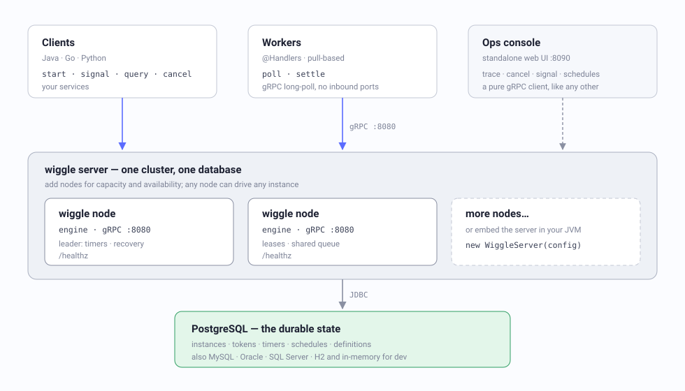
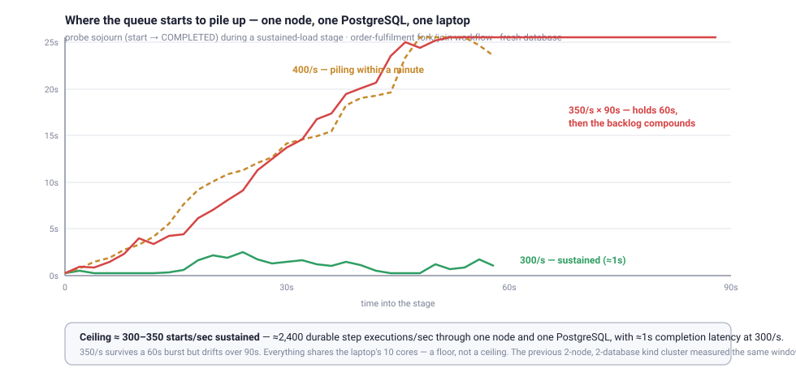

Describe a process as a graph. Wiggle runs it as a durable state machine that survives crashes, waits for humans, retries failures — and shards itself across isolated cells when one database is no longer enough.
Blueprint orders = Workflow.define("order-fulfilment") .step("validate") .gate("in-stock") .fork(Branch.of("payment", s -> s.step("authorise").step("capture")), Branch.of("shipping", s -> s.step("reserve-stock").step("print-label"))) .combine("merge") .step("notify") .build();
That's a complete, durable, parallel workflow. No YAML, no replay, no determinism rules to memorize — a compiled graph the server owns, and plain Java (or Go, or Python) methods that serve its steps.
Durable execution without the replay tax, and a sharding model that treats isolation as a first-class deployment primitive — not an afterthought.
A namespace is a cell: its own database, its own cluster. A Raft coordinator places
instances by consistent hashing over epochs; the instance id carries its own routing
(orders.e0.s3.01J…). Grow by adding cells; resharding never migrates data.
Every instance is DB-backed rows, not a call stack. Exactly-once dispatch, at-least-once execution, lease-based recovery when a worker dies mid-step.
step, gate, fork, choose, timers, signals,
sub-workflows, doWhile, forEach — a compiled graph, versioned by content
hash. The workflow is data, not replayed code, so there is no determinism contract to get wrong.
Workers long-poll over gRPC: no inbound connectivity, no broker, backpressure built in. Java, Go, and Python workers interoperate on one server — one instance, three languages.
One JAR plus a database (PostgreSQL, MySQL, Oracle, SQL Server — or in-memory for dev). Embed the server in your JVM for tests. The coordinator is opt-in. No Elasticsearch, no sidecar mesh, no mandatory Kubernetes.
A web ops console with a live trace of every instance over the workflow diagram — cancel, deliver signals, schedules, search by instance or correlation id. A CLI for the control plane. Health probes and queue-lag monitoring built in.
Topology and logic are separate. The graph is pure structure; handlers
are plain methods matched by name. A method's signature defines its step kind — a
boolean return is a gate, void is an effect, anything else is a task whose
return replaces the context. Nothing merges implicitly, ever.
Blueprint orders = Workflow.define("order-fulfilment") .step("validate") .gate("in-stock") // false ⇒ ends cleanly .fork( Branch.of("payment", s -> s .step("authorise", RetryPolicy.exponential(5, ofMillis(100))) .step("capture")), Branch.of("shipping", s -> s .step("reserve-stock") .sleep("await-warehouse", ofMillis(300)) .step("print-label"))) .combine("merge") // isolated branches rejoin HERE .step("notify") .build();
Branches run on isolated context copies — siblings can't see each other's writes. The only way back to shared state is the explicit combine.
@Handlers("order-fulfilment") class OrderHandlers { Order validate(Order o) { return o.withStatus("VALIDATED"); } boolean inStock(Order o) { return o.quantity() > 0; } Order authorise(Order o) { return o.withPaymentRef(auth(o)); } // the combine is mandatory: fold the branches' results onto the // pre-fork base and return the COMPLETE post-join context Order merge(@Context Order base, @Arm("payment") Order pay, @Arm("shipping") Order ship) { return base.withPaymentRef(pay.paymentRef()) .withShipmentRef(ship.shipmentRef()); } }
Handlers can use clocks, randomness, any library — and be redeployed at will. No replay means no history to stay compatible with.
Long-running reality is first-class: signal waits with
deadlines and escalation (awaitSignal("manager-approval", ofHours(48), …)), cron and
interval schedules with exactly-once firing across leader failover, sub-workflows, cancellation,
and dynamic fan-out where the element is the item's context.
Clients and pull-based workers speak gRPC to cells. Each cell is a complete cluster with its own database; an optional Raft coordinator (embedded Ratis + RocksDB — no external store) publishes shard→cell rings as epochs. New instances follow the new ring; in-flight ones finish where they live — resharding never migrates data, and any party can compute an instance's owning cell from its id alone.

Honest numbers from honest hardware — everything below measured on one MacBook Pro (M2 Pro, 10 cores), methodology and tools in the repo.

One codebase, four postures — without rewriting your workflows.
| Mode | What it is | When |
|---|---|---|
| Embedded | WiggleServer inside your JVM, in-memory store | dev, tests, single-process apps |
| Standalone | one node, gRPC :8080, in-memory or a database | small services, first deploy |
| Cluster | several nodes on one database — shared queue, leader runs timers/recovery | production, HA |
| Cellular | many cells (each its own DB + cluster) behind a coordinator | multi-tenant isolation, scale-out |
The reference client: DSL, @Handlers, embedded
server for tests. Maven Central.
wiggle-go — idiomatic structs-and-interfaces workers, same wire protocol.
wiggle-python — decorator-free handler classes, contextvars step scope.
The fastest end-to-end is one JVM: embedded server, one worker, one instance.
implementation("io.github.hadielmougy:wiggle-client:2.1.8") implementation("io.github.hadielmougy:wiggle-server:2.1.8") // embed for tests implementation("io.github.hadielmougy:wiggle-postgres:2.1.8") // + your storage
docker run --rm -p 8080:8080 \ -e WIGGLE_JDBC_URL=jdbc:postgresql://db:5432/wiggle \ -e WIGGLE_JDBC_USER=wiggle -e WIGGLE_JDBC_PASSWORD=wiggle \ hadielmougy/wiggle:2.1.8
try (WiggleServer server = new WiggleServer(ServerConfig.fromEnvironment()).start(); WiggleClient client = new WiggleClient(server.baseUrl()); Worker worker = new Worker(client, "worker-1").register(greet).handlers(new GreetHandlers())) { worker.start(); String id = client.start(greet, Map.of("name", "ada")); InstanceView result = client.awaitCompletion(id, ofSeconds(10)); // → COMPLETED }
Then: onboarding + full configuration reference · the DSL cookbook (every operator, runnable) · the 5-minute slide tour.